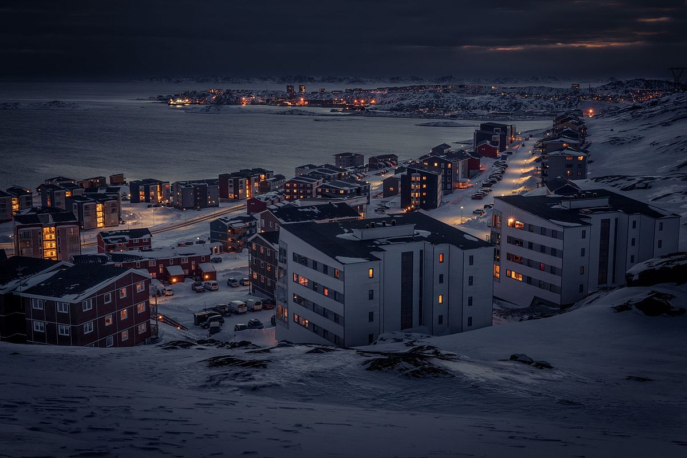
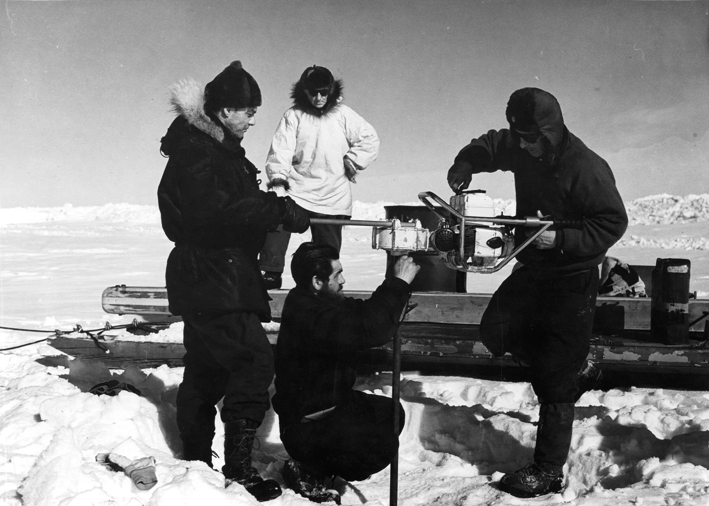
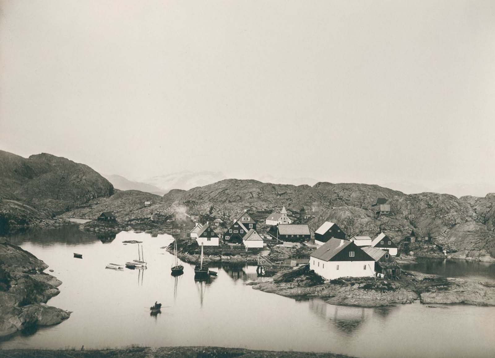
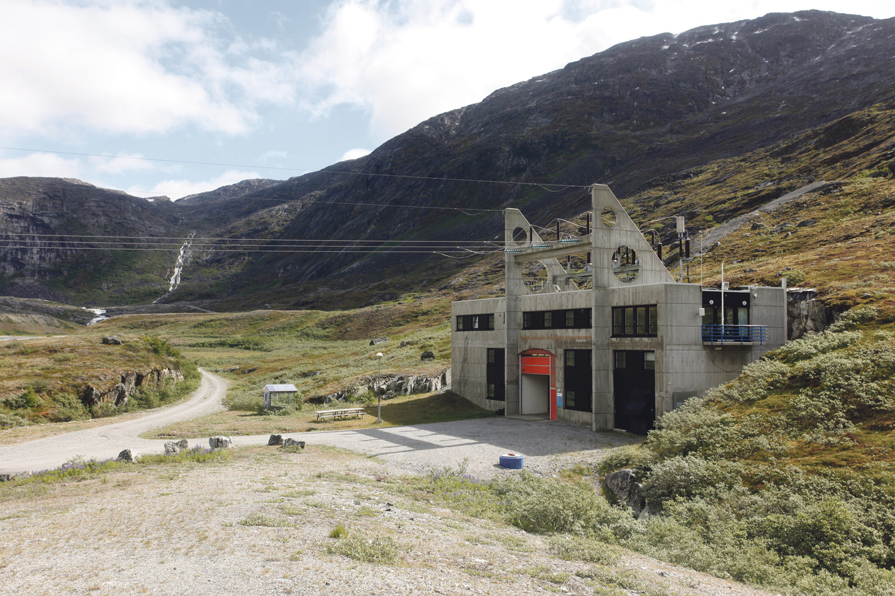
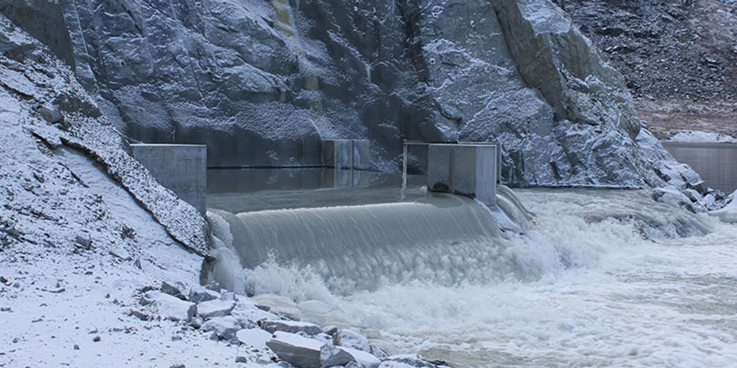

Greenlandic Energy System

The history of Greenland's Energy system
A brief study on how did greenland people get energy

Greenland before 1993

Prior to 1993, Greenland's remote communities predominantly relied on imported diesel, mainly from Denmark, for decentralized electricity generation. Each settlement operated its own isolated microgrid powered by diesel generators, due to the island's vast and challenging geography. This approach ensured localized resilience but depended heavily on external fuel sources, posing economic and environmental challenges. While the potential for renewable energy was recognized, diesel remained the primary power source until the early 1990s.
The First Hydro Power Plant
The Buksefjord hydroelectric power plant is the first and largest hydroelectric power plant in Greenland. It was built by Nuuk-Kraft and it is operated by Nukissiorfiit, Greenland's national energy company. Construction of the plant was approved by the Parliament of Greenland in 1990. It was commissioned in 1993.
Originally, the plant had two turbines with capacity of 15 MW each. In 2008, a third turbine with the same capacity was installed. The generated power is transferred to Nuuk over the 57-kilometre (35 mi) long Buksefjord–Nuuk power line, which includes the Ameralik Span, the world's longest span.
All 5 Operational Dams
Since 1993, Greenland has built five major hydroelectric power plants using its abundant rivers and glaciers. they are:
Buksefjord hydroelectric power plant at Nuuk, 45 MW from 1993
Tasiilaq hydropower plant in Tasiilaq, 1.2 MW since 2005
Qorlortorsuaq Dam in Qaqortoq, 7.6 MW since 2007
Sisimiut Hydro Power Plant in Sisimiut, 15 MW since2010
Ilulissat Hydropower plant in Ilulissat, 22.5 MW since 2014
Together they make up 80% of Greenland's electricity generation today and represent Greenland's ambitious shift from reliance on diesel to renewable energy, providing a huge amount of power to various regions of the vast island.
All Potential Dams Site
The attached map provides a detailed visual representation of the hydrological catchments across Greenland. Each catchment zone marked represents a significant area of hydroelectric potential, a testament to Greenland's capability in sustainable energy development.With vast ice sheets and glaciers, Greenland possesses a rapidly expanding hydroelectric potential, particularly in the context of global warming. As temperatures rise, the island's extensive ice reserves are melting which enlarging the hydroelectric potential. Energy experts and planners have identified Greenland's evolving hydrological landscape as an even more vital asset in the renewable energy realm. Alongside this narrative, an attached map delineates the specific locations of these potential catchments.
One More Note
With vast ice sheets and glaciers, Greenland possesses a rapidly expanding hydroelectric potential, particularly in the context of global warming. As temperatures rise, the island's extensive ice reserves are melting which enlarging the hydroelectric potential. Energy experts and planners have identified Greenland's evolving hydrological landscape as an even more vital asset in the renewable energy realm. Alongside this narrative, an attached map delineates the specific locations of these potential catchments.

Buksefjord hydroelectric power plant

Ilulissat vatnsaflsvirkjun